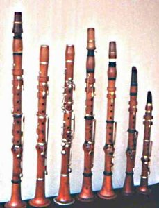

ԿԼԱՌՆԵՏ
 Կլառնետը այն սակավաթիվ երաժշտական գործիքներից մեկն է, որի տեսքի ամսաթիվը քիչ թե շատ կարելի է ասել միանշանակ: Հետազոտողները համակարծիք են, որ այն ստեղծվել է 1701 թվականին Նյուրբերգի փայտափայլերի վարպետ Յոհան Քրիստոֆ Դենների (1655-1707) կողմից, որը կատարելագործեց հին ֆրանսիական բալյումե խողովակը:
Երկու հիմնարար տարբերություններ թույլ են տալիս մեզ խոսել նոր գործիքի ծննդյան մասին. Նախ, Դենները փոխարինեց խողովակը կտրված լեզվով եղեգնյա ափսեով ՝ փայտե բերանին ամրացված ձեռնափայտով և հանեց այն խցիկը, որում գտնվում էր (բնութագիր Վերածննդի գործիքների առանձնահատկությունը), որը թույլ էր տալիս փոխել կատարողի շրթունքների ճնշումը ձեռնափայտի վրա `ազդել ստացված ձայնի որակի վրա: Երկրորդ, նա ներմուծեց դուդեցիմայի փականը, որը դյուրացնում է գնանկումը, և դրանով ընդլայնելով նոր գործիքի շարքը: Կլարնետի վերին շարքի հնչյունները ժամանակակիցներին հիշեցնում էին բարձր շեփորի տեմպի մասին - կլարինո (կլար - թեթեւ, պարզ), որը գործիքին տալիս էր անուն ՝ իտալական նեղ կլարնետո:
VXIII դարի կեսերին հայտնի են նվագախմբային պարտիտուրաներում նոր գործիքի օգտագործման մեկուսացված դեպքեր, և 1755 թ.-ին կլարնետներ են ներկայացվել ֆրանսիական բոլոր ռազմական նվագախմբերին: Բազմաթիվ երաժշտական վարպետների ջանքերով, որոնց թվում պետք է կոչվեին Դենների որդին ՝ Հակոբը, Բերտոլդ Ֆրիցը, Josephոզեֆ Բիրը և Քսավիեր Լեֆեվը, կլարնետը բարելավվեց, և դարասկզբին այն հաստատուն տեղ գրավեց եվրոպական նվագախմբերում: Այնուամենայնիվ, կլարնետին բնորոշ մատների մատների դժվարությունները (տե՛ս «մի փոքր ֆիզիկա») թույլ չէին տալիս ազատ խաղալ բոլոր ստեղների մեջ:
Կատարողներն ու արհեստավորները ելք են գտել այս իրավիճակից ՝ ստեղծելով տարբեր չափերի գործիքներ, որոնք հնչում են այս կամ այն ստեղնով ՝ կախված դրանց երկարությունից: Այս խնդիրը մինչ օրս ամբողջությամբ լուծված չէ, և ժամանակակից պրոֆեսիոնալ կլարնետահարներն իրենց գործերում կրում են երկու գործիք `« B- ում », որը տեղափոխում է մեծ վայրկյան ներքև և« A- ում », որը տեղափոխվում է ներքևի փոքր երրորդով: Այլ սորտեր (տես պատկերասրահ) օգտագործվում են ավելի շուտ ոչ թե նվագելու հարմարության համար, այլ նրանց տարբեր հնչերանգների պատճառով: (Չնայած կոմպոզիտորները, սկսած Վ. Ա. Մոցարտից, օգտագործում են նաև կլարնետի տեմբրերի տարբերությունը "B- ում" և "A- ում")